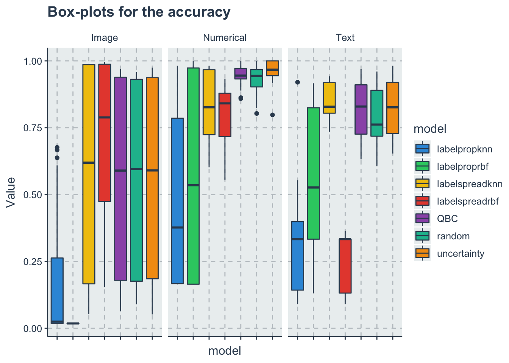
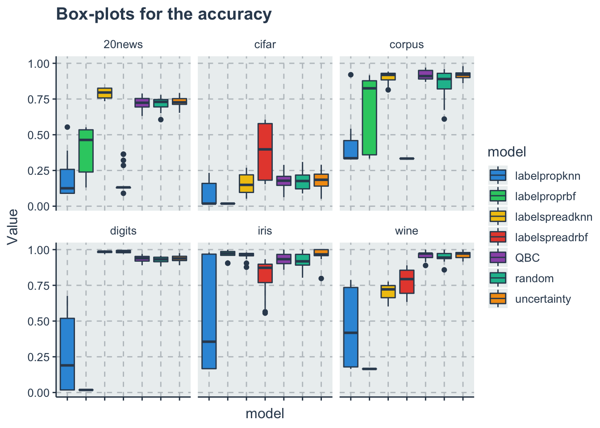
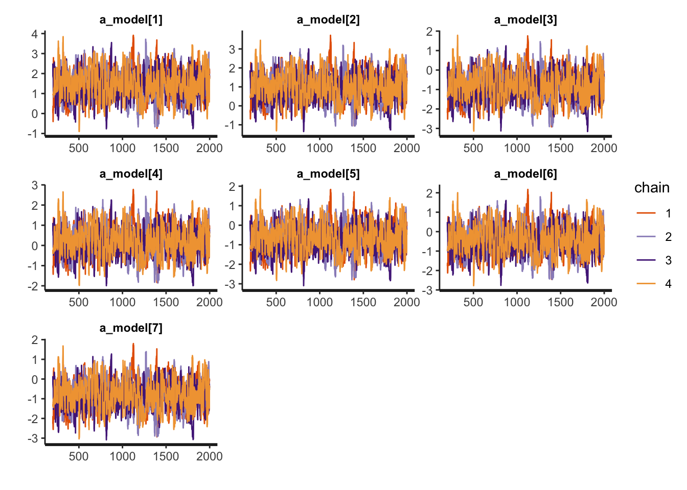
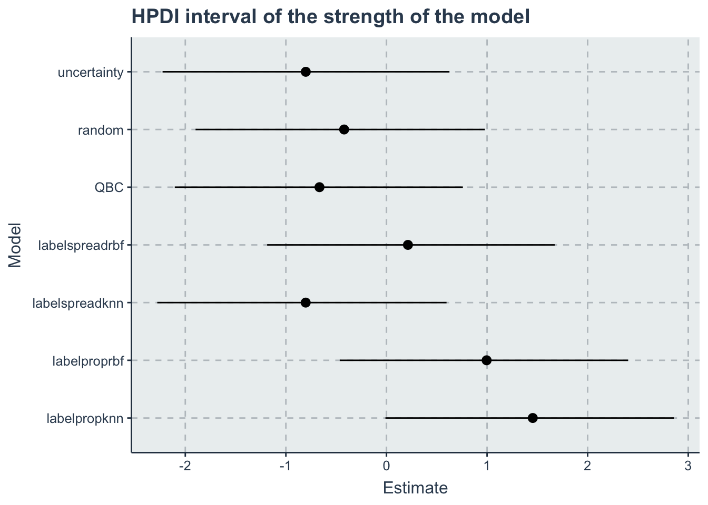

Chapter 4 Analysis
d <- read_csv('./data/auto-label-comparison.csv')
dtime <- dplyr::filter(d, ValueType=='Time')
dacc <- dplyr::filter(d, ValueType=='Accuracy')4.1 Ranking accuracy
This is just an example on how to analyze the data. I will be using bayesian data analysis here….
4.1.1 Descriptive statistics
4.1.1.1 Generate some tables
Using the latex option you can generate the latex table automatically You can either copy and paste to latex or save it in a separate file and import it…
dacc %>%
dplyr::group_by(model, DatasetType) %>%
summarise(Mean = mean(Value),
Median = median(Value)) %>%
dplyr::ungroup() %>% #Now is just formating the dataframe to look like a nice table
tidyr::pivot_wider(names_from = DatasetType, values_from=c('Mean', 'Median')) %>%
kable(col.names = c("Model",'Image', 'Numerical', 'Text', 'Image', 'Numerical', 'Text')) %>% #There is the format option of
add_header_above(c(" ", "Mean"=3, "Median"=3)) %>%
kable_styling()| Model | Image | Numerical | Text | Image | Numerical | Text |
|---|---|---|---|---|---|---|
| labelpropknn | 0.1803436 | 0.4990864 | 0.3053600 | 0.0248602 | 0.3768728 | 0.3333333 |
| labelproprbf | 0.0180183 | 0.5667558 | 0.5160357 | 0.0180183 | 0.5349159 | 0.5265126 |
| labelspreadknn | 0.5701876 | 0.8331190 | 0.8462853 | 0.6192536 | 0.8264811 | 0.8285170 |
| labelspreadrbf | 0.6861312 | 0.7954410 | 0.2511023 | 0.7884933 | 0.8410380 | 0.3333333 |
| QBC | 0.5575380 | 0.9470665 | 0.8198721 | 0.5897392 | 0.9449465 | 0.8292117 |
| random | 0.5545589 | 0.9324540 | 0.7882019 | 0.5958778 | 0.9439340 | 0.7618463 |
| uncertainty | 0.5592158 | 0.9642017 | 0.8241434 | 0.5903052 | 0.9669744 | 0.8263763 |
4.1.1.2 Generate some basic plots
Just to illustrate here some options
Aggregated by type of dataset
ggplot(data=dacc, aes(x=model, y=Value, fill=model))+
geom_boxplot()+
theme(axis.text.x = element_blank())+ #remove the x labels
facet_wrap(~DatasetType)+
labs(title = 'Box-plots for the accuracy') By individual datasets
ggplot(data=dacc, aes(x=model, y=Value, fill=model))+
geom_boxplot()+
theme(axis.text.x = element_blank())+ #remove the x labels
facet_wrap(~Dataset)+
labs(title = 'Box-plots for the accuracy')
4.2 Bradley terry model for ranking
To create a Bradley terry model we need first to transform our dataset to paired comparisons On each iteration for each dataset for each variable we will rank the models based on the Value of the accuracy (lower accuracy -> smaller) After we expand it to wide so we can compare each algorithm with each other and create a BT dataset
d_acc_rank <- dacc %>%
dplyr::group_by(Dataset, Variable, iterations) %>%
dplyr::mutate(Rank=rank(Value, ties.method = 'random')) %>%
dplyr::ungroup() %>%
dplyr::select(-Value) %>% #we need to drop the Value variable to pivot wider
tidyr::pivot_wider(names_from = model,
values_from=Rank)Now we can create the BT dataset
#a vector with the name of the algorithms
models <- get_index_names_as_array(d$model)
n_models = length(models)
comb <- gtools::combinations(n=n_models, r=2, v=seq(1:n_models), repeats.allowed = F) #all teh paired combinations
d_acc_bt <- dplyr::tribble(~model0_name, ~model0, ~model1_name, ~model1, ~y, ~iterations, ~Dataset, ~DatasetType)
#now we loop each row of the rank wide dataset and create a new one
for(i in 1:nrow(d_acc_rank))
{
current_row <- d_acc_rank[i,]
for(j in 1:nrow(comb)){
comb_row <- comb[j,]
model0_name <- models[comb_row[1]]
model0 <- comb_row[1]
model0_rank <- current_row[[1,model0_name]]
model1_name <- models[comb_row[2]]
model1 <- comb_row[2]
model1_rank <- current_row[[1,model1_name]]
diff_rank <- model1_rank - model0_rank
#SInce higher accuracy is better if model 1 rank- model 0 rank is positive than model1 wins and y=1 else y=0
y <- ifelse(diff_rank>0, 1, 0)
d_acc_bt <-d_acc_bt %>%
add_row(model0_name=model0_name,
model0=model0,
model1_name=model1_name,
model1=model1,
y=y,
iterations=current_row$iterations,
Dataset=current_row$Dataset,
DatasetType=current_row$DatasetType)
}
}Now that we have the dataset we can run the model
// Ranking model
// Author: David Issa Mattos
// Date: 6 sept 2020
//
//
data {
int <lower=1> N_total; // Sample size
int y[N_total]; //variable that indicates which one wins model 0 or model 1
int <lower=1> N_models; // Number of models
int <lower=1> model0[N_total];
int <lower=1> model1[N_total];
// //To model the influence of each benchmark
// int <lower=1> N_bm;
// int bm_id[N_total];
}
parameters {
real a_model[N_models]; //Latent variable that represents the strength value of each model
}
model {
real p[N_total];
a_model ~ normal(0,2);
for (i in 1:N_total)
{
p[i] = a_model[model0[i]] - a_model[model1[i]];
}
y ~ bernoulli_logit(p);
}
//Uncoment this part to get the posterior predictives and the log likelihood
//But note that it takes a lot of space in the final model
// generated quantities{
// vecor [N_total] y_rep;
// vector[N_total] log_lik;
// for(i in 1:N_total){
// real p;
// p = a_alg[algo1[i]] - a_alg[algo0[i]];
// y_rep[i] = bernoulli_logit_rng(p);
//
// //Log likelihood
// log_lik[i] = bernoulli_logit_lpmf(y[i] | p);
// }
// }m1_data <- list(
N_total=nrow(d_acc_bt),
y = as.integer(d_acc_bt$y),
N_models = as.integer(n_models),
model0=as.integer(d_acc_bt$model0),
model1=as.integer(d_acc_bt$model1)
)Note that this is a stat model for ranking all the accuracy for all models. We can later sophisticate it a bit more but this should be more than enough for a conference
m1_fit <- stan(file = './models/rankingmodel.stan',
data=m1_data,
chains = 4,
warmup = 200,
iter = 2000)
saveRDS(m1_fit, file = "./data/m1_fit.RDS")m1_fit <-readRDS("./data/m1_fit.RDS")
a_model <- c("a_model[1]",
"a_model[2]",
"a_model[3]",
"a_model[4]",
"a_model[5]",
"a_model[6]",
"a_model[7]")
rstan::traceplot(m1_fit, pars=a_model)
hpdi <- get_HPDI_from_stanfit(m1_fit)
hpdi_algorithm <- hpdi %>%
dplyr::filter(str_detect(Parameter, "a_model\\[")) %>%
dplyr::mutate(Parameter=models)
ggplot(data=hpdi_algorithm, aes(x=Parameter))+
geom_pointrange(aes(
ymin=HPDI.lower,
ymax=HPDI.higher,
y=Mean))+
labs(y="Estimate", x="Model", title = "HPDI interval of the strength of the model")+
coord_flip()
Here we are extracting all samples and ranking them to have a distribution of the ranks
posterior <- rstan::extract(m1_fit)
a_model <- as_tibble(posterior$a_model)
colnames(a_model) <- models
#sampling from the posterior
s <- dplyr::sample_n(a_model, size = 1000, replace=T)
s <- dplyr::mutate(s, rown = row_number())
wide_s <- tidyr::pivot_longer(s, cols=all_of(models), names_to = "Models", values_to = "a_model")
rank_df <- wide_s %>%
dplyr::group_by(rown) %>%
dplyr::mutate(Rank = rank(-a_model, ties.method = 'random')) %>%
dplyr::ungroup() %>%
dplyr::select(-a_model) %>%
dplyr::group_by(Models) %>%
dplyr::summarise(MedianRank = median(Rank),
VarianceRank = var(Rank)) %>%
dplyr::arrange(MedianRank)rank_df_table <- rank_df
colnames(rank_df_table) <- c("Models","Median Rank", "Variance of the Rank")
kable(rank_df_table, "html") %>%
kable_styling(bootstrap_options = c('striped',"hover", "condensed" ))| Models | Median Rank | Variance of the Rank |
|---|---|---|
| labelpropknn | 1 | 0.0000000 |
| labelproprbf | 2 | 0.0000000 |
| labelspreadrbf | 3 | 0.0000000 |
| random | 4 | 0.0158198 |
| QBC | 5 | 0.2636627 |
| labelspreadknn | 6 | 0.4159199 |
| uncertainty | 7 | 0.4084795 |